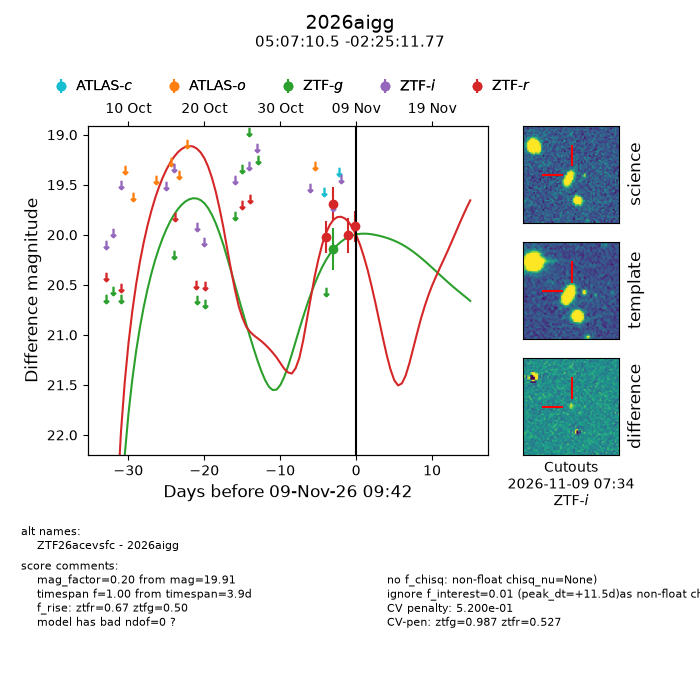
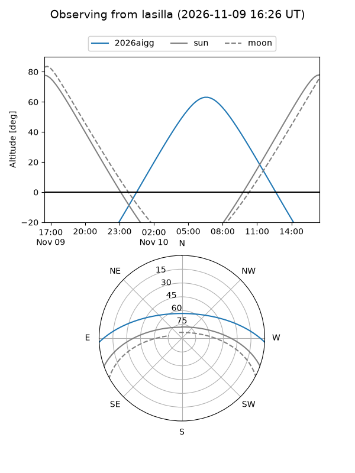
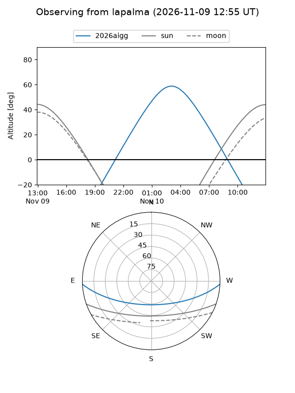
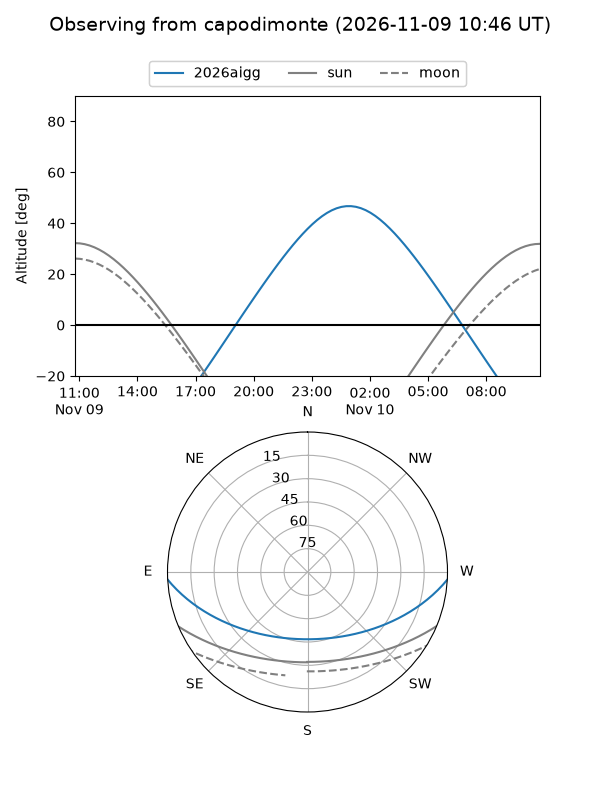
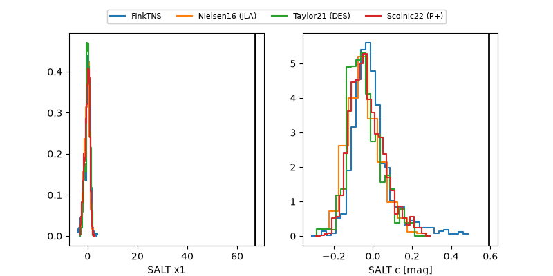

2026aigg
Target 2026aigg at 2026-11-09 09:45
Aliases and brokers:
FINK-ZTF: ztf.fink-portal.org/ZTF26acevsfc
Lasair-ZTF: lasair-ztf.lsst.ac.uk/objects/ZTF26acevsfc
ALeRCE-ZTF: alerce.online/object/ZTF26acevsfc
YSE-PZ: ziggy.ucolick.org/yse/transient_detail/2026aigg
TNS name: wis-tns.org/object/2026aigg
Direct TNS query: direct search
alt names
ZTF26acevsfc (ztf,fink_ztf)
2026aigg (tns,yse)
Coordinates:
equatorial (ra, dec) = 76.7938,-2.41994
equatorial (HMS+DMS) = 05:07:10.52,-02:25:11.77
galactic (l, b) = (202.6628,-24.20269)
Flags:
likely cv: !!
CV pen: 0.5199995393654668
peak dt: +11.5
Photometry:
last ztfg=20.14, ztfr=19.91
1 ztfg, 4 ztfr detections
Lightcurve

Visibility



Additional plots
